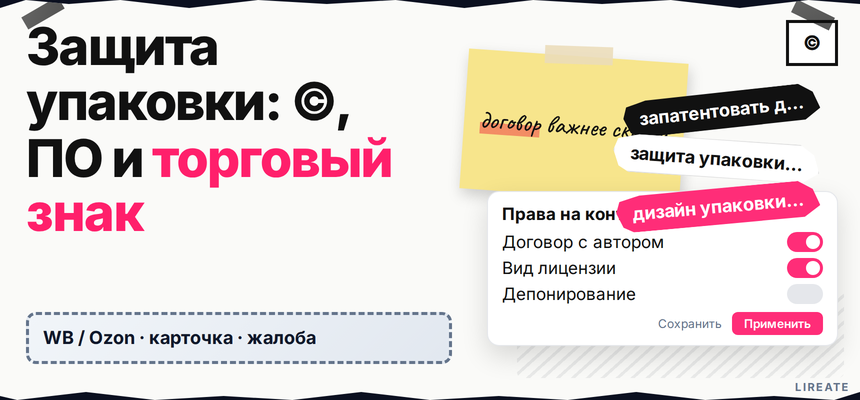
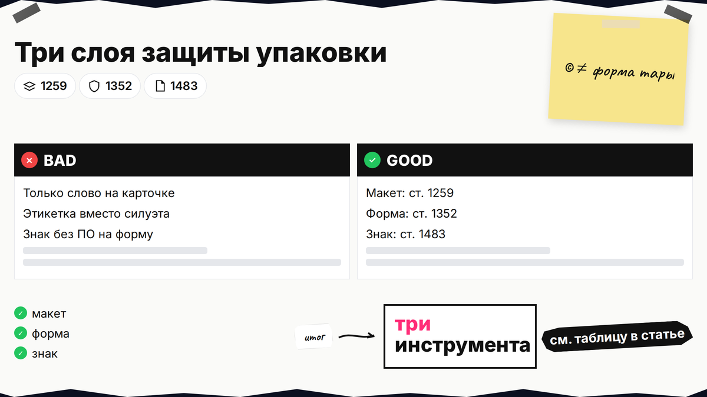
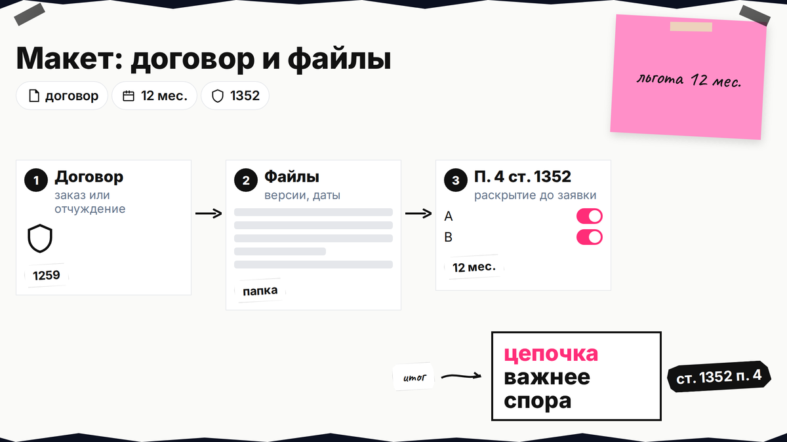
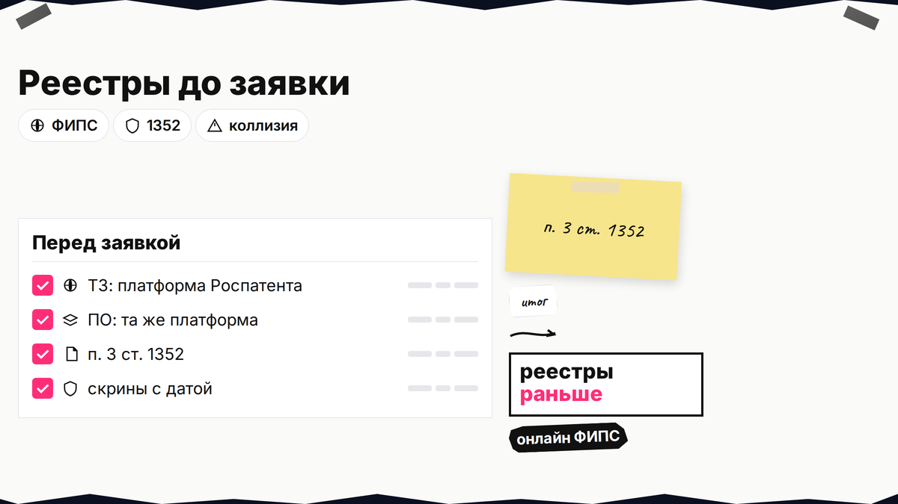

Конкурент повторил вашу коробку и этикетку на маркетплейсе, а поддержка просит "доказательства прав". Авторское право на рисунок, патент на промышленный образец и товарный знак решают разные задачи: одно не заменяет другое. Ниже вы разделите эти инструменты на "полках", зафиксируете макет, проверите реестры и поймёте, куда нажать в кабинете продавца и что подать в Роспатент, чтобы защита работала в споре по карточке.

TL;DR / Быстрый инсайт: Авторское право охраняет конкретное художественное решение (макет, иллюстрацию), если оно оформлено как произведение. Промышленный образец (это и есть "патент на дизайн упаковки" в быту) защищает внешний вид изделия, если он новый и оригинальный по существенным признакам (п. 1 ст. 1352 ГК РФ); срок исключительного права 5 лет с даты заявки, продления до 25 лет суммарно (ст. 1363). Товарный знак привязывает слово, логотип или комбинированное обозначение к вашему бренду в нужных классах МКТУ. Правила приёмки и упаковки на площадке (инструкция WB) - это про логистику, а не про исключительное право на дизайн.
МКТУ - классификатор классов для заявки на знак. Реестр на сайте Роспатента показывает уже зарегистрированные обозначения. Ниже - обзор ГК РФ, ст. 1354 ГК РФ (объём охраны по патенту на промышленный образец) и инструкций площадок, без замены консультации поверенного.

Авторское право. Яркая композиция на этикетке, фирменный паттерн, персонаж - могут входить в объекты авторских прав (ст. 1259 ГК РФ). Оно защищает выражение идеи, а не "любую коробку вообще". Для сходного по ощущениям, но не скопированного макета одной лишь схожести может не хватить - важны доказательства заимствования (практика обобщается, например, в обзоре).
Промышленный образец. Охватывает решение внешнего вида изделия: форма, орнамент, цветовая гамма, если они существенные и не обусловлены только технической функцией (п. 1, 5 ст. 1352). Охрана не даётся, если дизайн вводит в заблуждение или смешение с чужими обозначениями по смыслу п. 5 ст. 1352 (в т.ч. для упаковки как тары).
Товарный знак. Закрепляет узнаваемый знак или слово как указание на ваш бренд; пересечение по однородным товарам даёт основание для отказа (п. 6 ч. 1 ст. 1483). Подробное сравнение ПО и знака для формы товара - в материале "Промышленный образец или товарный знак".
Делайте: записать в шпаргалке, что именно копируют конкуренты - графику, силуэт коробки или название. Не делайте: подавать только знак и ждать, что им закроется чужая форма без отдельного ПО или сильного объёмного знака.
Короткая памятка: авторское право держится на файле и договоре, промышленный образец - на том, как выглядит серийная тара, товарный знак - на буквах и знаке, по которым вас узнают на витрине маркетплейса.
| Инструмент | Что закрывает в упаковке | Главный вопрос до заявки |
|---|---|---|
| Авторское право | Макет, рисунок, верстка как произведение | Кому принадлежат права по договору и где исходники |
| Промышленный образец | Внешний вид изделия (форма, декор) | Новизна, оригинальность, не только "функция ручки" |
| Товарный знак | Слово, лого, комбо на этикетке | Классы МКТУ и отсутствие смешения (гайд по классам) |
Итоговый вердикт: чаще всего на маркетплейсе нужен сэндвич: договор и регистрация прав на макет, патент на промышленный образец для узнаваемого силуэта и товарный знак для названия и логотипа. Один инструмент редко закрывает все риски.

Договор авторского заказа или отчуждение исключительного права, акты и версии файлов (PSD, AI, PDF с датой). Без этого спор "кто автор" встанет раньше спора о копии.
Делайте: папка: договор, переписка, экспорт, скрины загрузки на МП с датой. Не делайте: массовый показ финала без плана по п. 4 ст. 1352 - 12 месяцев после своего раскрытия дают окно, но срок докажете вы.

Поисковая платформа для ТЗ; Поисковая платформа для аналогов ПО; критерий "общего впечатления" для образца - в п. 3 ст. 1352.
Делайте: скрины с номером заявки. Не делайте: сознательное приближение к чужому знаку - риск отказа и претензий.
Подача онлайн через online.rospatent.gov.ru (личный кабинет заявителя). На снимках раскройте существенные признаки - в этом объёме потом и держится охрана (ст. 1354 ГК РФ). Срок: 5 + продления до 25 лет (ст. 1363).
Делайте: чертежи под формат ФИПС. Не делайте: заявлять безликий стандарт без аргумента оригинальности.
Классы под товар - гайд. Значок "Оригинал" на WB привязан к ТЗ в классах 1-34 и документам; несоответствие грозит отказом (SelSup). Делайте: бренд на этикетке = бренд в свидетельстве. Не делайте: доверять "свободному полю" ЛК без проверки реестра.
Инструкция WB - про приёмку на складе, не про исключительное право на узор. Делайте: оба трека - логистика и учёт номеров патента/ТЗ. Не делайте: смешивать "правильную стикеровку" с правовой охраной.
URL карточки, артикул, скрин этикетки и ссылка на ваш патент или свидетельство ТЗ. По WB применяют канал "цифровой арбитраж"; ориентир ответа продавца 10 дней встречался в обзорах - сверьте оферту (Клерк). Делайте: обращение через интерфейс площадки. Не делайте: эмоциональные посты вместо пакета документов.
Workflow:
Роли на макете (кто автор) → договор и файлы → поиск в реестрах ТЗ и аналогов ПО → заявка на ПО через online.rospatent.gov.ru → заявка на ТЗ в нужных классах МКТУ → сверка этикетки с WB → мониторинг карточек и жалобы по правилам площадки
Делайте: таблица сроков патента и ТЗ. Не делайте: пропускать продления.
После регистрации храните электронные копии свидетельств, публикуйте корректные реквизиты на упаковке и повторяйте поиск копий раз в квартал. Если нужно оформить отчуждение прав от дизайнера или лицензию на макет, загляните в рубрику "Авторское право" на Лирейт и сверьте классы МКТУ по отдельному гайду; проверку имени в каталоге и реестре - в материале о бренде на Wildberries.
Материал проверен: редакция Лирейт, нормы сверены с КонсультантПлюс и официальными страницами Роспатента и ФИПС.
Достоверность данных: редакционная проверка на 06.11.2026. Показы поискового спроса в материал не включались: в среде подготовки инструмент Вордстат был недоступен.
Обычно речь о патенте на промышленный образец. Отдельно может потребоваться товарный знак для названия и логотипа и договор по авторскому праву на макет. Подайте заявки последовательно или параллельно, но не смешивайте их в один "универсальный" документ.
Авторское право защищает произведение - конкретный макет. Промышленный образец защищает внешний вид серийного изделия по признакам из ст. 1352. Для серийной коробки патент часто удобнее в доказательствах, для уникального арт-худа сила в авторском договоре и регистрации.
Словесный или плоский знак не заменяет силуэт. Для формы нужен ПО или объёмный знак с различительной способностью; см. сравнение в материале ПО против товарного знака.
Смотрите п. 4 ст. 1352: утечка самим заявителем не всегда убивает новизну, если заявка подана в течение 12 месяцев, но доказательства дат размещения и приоритета соберите заранее.
Логистические правила площадки (WB) задают штрихкоды и упаковку; отдельное требование "всегда печатать номер патента" здесь не заменяет юридическую стратегию. Для жалоб и переговоров номер патента и свидетельства ТЗ прикладывайте к обращению.
Соберите стабильные ссылки, артикулы, скриншоты и сравнение с вашим охранным документом; подайте через канал площадки (для WB - логика "цифрового арбитража", актуальные сроки смотрите в оферте). При серьезном ущербе подключайте юриста для претензии и судебной работы.
Используйте типовой авторский договор с блоком об отчуждении или лицензии; услуги по подготовке таких документов перечислены в разделе "Авторское право" на сайте Лирейт.